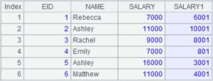
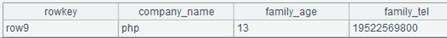
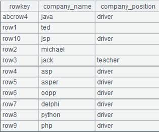

Description:
Perform row-to-column transposition for a sequence.
Syntax:
A.pivot(g:G,…;F,V;Ni:N'i,…)
Note:
According to grouping fields/expression g, the function transfers values Ni in F field in each group as new field names N'i to perform a row-to-column transposition, and reassigns values of V field to the new fields. By default, Ni includes non-duplicate values in F field; when N'i is omitted , just use Ni.
Parameters:
|
A |
A sequence |
|
g |
Grouping fields/expressions |
|
G |
A field in the result set |
|
F |
A to-be-transposed field in the specified sequence |
|
V |
A field in the specified sequence |
|
Ni |
Values of F field |
|
N'i |
The name of new Ni field |
Options:
|
@r |
Transpose rows to columns. In this case the default fields in Ni are the fields of A that are not included in g. Perform column-to-row transposition, where field names Ni are transposed as values of F field; when parameter N'i is present, it will be values of F field and values of original Ni field will be assigned to new field V. In this case the default values of Ni are all fields in sequence A except for grouping field g |
|
@s(g:G,…;F,f(V);Ni:N'i,…) |
Parameter f can be an aggregate function, which is sum, count, max, min or avg. One and only one Ni can be ignored. In that case the function performs aggregate over all the other Nis. |
Return value:
A sequence/record sequence
Example:
|
|
A |
|
|
1 |
=demo.query("select * from SCORES") |
|
|
2 |
=A1.pivot(CLASS,STUDENTID;SUBJECT,SCORE;"English":"ENGLISH","Math","PE") |
 Transpose values of SUBJECT column English, Math and PE to new fields, in which the new name of English field is ENGLISH; values of original SCORE field will be reassigned to the new fields |
|
3 |
=A1.pivot(CLASS,STUDENTID;SUBJECT,SCORE;"English","Math","PE") |
N'I is omitted |
|
4 |
=A1.pivot(CLASS,STUDENTID;SUBJECT,SCORE) |
 Both Ni and N'i are omitted, and values of Ni are by default the distinct values of the original SUBJECT field |
|
5 |
=A2.pivot@r(CLASS,STUDENTID;SUBJECT,SCORE;ENGLISH:"English",Math,PE) |
 column-to-row transposition; make columns ENGLISH, Math and PE values of SUBJECT field; and values of original ENGLISH, Math, PE fields values of column SCORE |
|
6 |
=A2.pivot@r(CLASS,STUDENTID;SUBJECT,SCORE) |
Ni is omitted; its values are by default all the original field names except for CLASS and STUDENTID |
|
7 |
=A1.pivot@s(CLASS;SUBJECT,min(SCORE);"PE":"minPE","Math":"maxMath") |
Row to column transposition, where the minimum values of PE and Math are the new fields, whose names are minPE and minMath respectively |
|
8 |
=A1.pivot@s(CLASS;SUBJECT,max(SCORE);"English":"maxEnglish",:"other") |
One Ni is ignored, which means getting the maximum value from all fields except for English |
|
9 |
=A1.pivot@s(CLASS;SUBJECT,max(SCORE);:"max") |
Get the maximum value from all fields |